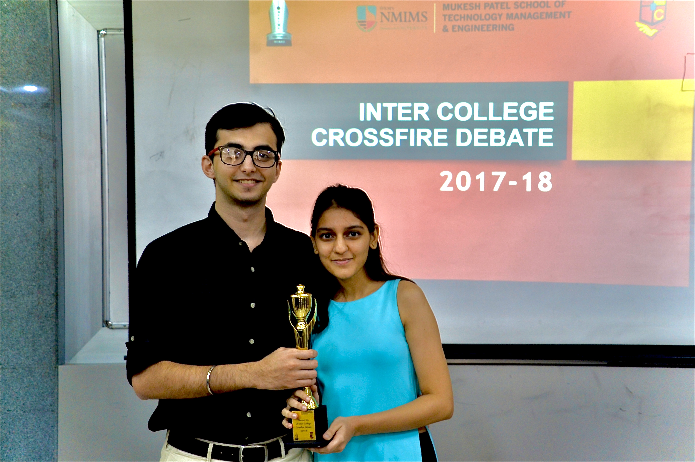

Meet your next
software developer.

I’m a problem solver
with
technical
skills
to
boot.
I love making
(and breaking) things
(and breaking) things

I’ve worked in 2D, 3D…and 4D?


and still manage
to make free time.
to make free time.
I’m up for new adventures
and I’d like to
work with you.
Experience
-
Palo Alto Networks
(SDE Intern)
May 2023 to September 2023
- Took ownership of diagnostics across all 14 components of the Indicator of Compromise (IoC) and WildFire (WF) pipelines.
- Deployed an end-to-end metrics dashboard using Prometheus and Grafana to generate comprehensive observability for data flow and latencies of components. Set up alerts based on processing metrics patterns to monitor inconsistencies.
- Reduced instability of the IoC pipeline by 83% by debugging over 4000 LOC across 6 components.
- Automated backfill process to schedule tasks while respecting resource limitations and automatically sync master database with current status. Reduced need for human interaction by 85%.
-
Trilogy
(SDE II)
January 2021 to August 2021
- Developed 40 REST APIs on AWS for Trilogy Virtual Data Room resulting in migration of 3000 end users from Jira. Leveraged ElastiCache to reduce loading times by 31% compared to lazy loading.
- Performed feature development and maintenance (Java, Python, C#) on the Annual Recurring Revenue (ARR) report generator improving senior executives' ability to visualize key decision metrics.
- Maintained a 94.3% first time acceptance rate throughout tenure for all PRs on GitHub.
-
Quantiphi
(MLE Intern)
July 2020 to January 2021
- Computed topic modeling, rule-based speaker tagging and speaker diarization (with a custom LSTM network) on Google Cloud achieving 96% accuracy.
- Led the development for classification of over 100,000 client call recordings into appeals and grievances. The model received a 0.91 F-1 score. Collaborated in creating the prototype for Healthfirst, an NYC based insurance firm.
Schools

Recent work and experiments
TWERP
2023This was my first solo Hackathon project at HackGPT NYC 2023. It won second place overall, won the PromptLayer challenge and came third in the Cohere challenge. Check it out on Github
CRAP! Creative and Remarkable AI for Productivity

CRAP
2023This was our submission to LAHacks. It was a chrome extension buddy that automatically tracks all websites visited (including PDFs and videos) during a study session, summarizes them into prettified Notion like PDFs along with timestamps for easy access. It also creates quizzes and tests (MCQ and subjective) to test your grasp on the materials studied during the session. Check it out on Github
WasteNot

WasteNot
2023This is a react native app we created for Hack@CEWIT 2023. It was the best project at the expo. It won the following 4 prizes: Climate Action Hero, AI Mastermind, HealthTech Hero, Hacking Hero. Check it out on Github
GPTutor


GPTutor
2023This was a project I created alone for HackNYU 2023. It creates a customized AI model that acts as a tutor and can be trained to provide course-specific as well as content-specific information. It integrates with Discord can concurrently act like an available tutor for multiple students at a time. Check it out on Github
CatCaptions

CatCaptions
2023This application was what I built for WhiskerHacks 2023. It won the "Out of the whisker box" category. I'd never worked with react native or NLP models before, so this presented a unique challenge. Finally, I created an app that runs natively on iOS, Android and web, allows users to upload a picture from their gallery, and automatically generates Instagram worthy captions for their pictures. Check it out on Github
AI Plays Snake

AI Plays Snake
2020This app was an experimental game used to create a game in Python using PyGame and then teaching an AI to play the game using an Artificial Neural Network and optimizing the gameplay using Genetic Algorithm (GA).
AI Plays Codenames
AI Plays Codenames
2021This repository implements a simple single-player version of the codenames game by Vlaada Chvátil. You can play as the agent or the spymaster, and the Glove word vectors will take the role of your partner, as you try to find the 8 marked words in as few rounds as possible.
Splitwise, Visualized
Splitwise, Visualized
2022This program doesn't do anything that's never been done before. It's simply my implementation of Splitwise, a popular app to track and simplify cashflow between a group of friends. The aim is to see if a graph where people involved in transactions are the nodes and edges are the transactions between two nodes could be used to simplify the problem.
Particle Simulation
Particle Simulation
2022For this project, I created a 2D particle simulator. We apply gravity as well as track bounces and the energy lost in the same. Since it is the first of three parts, we do not consider interaction between particles during the simulation.
Rope Simulation
Rope Simulation
2022This is part 3 of the series, where I simulate a rope made up of particles with springs between the particles to model the forces acting in each dimension.
Spring Simulation

Spring Simulation
2022This is part 2 of the simulation series, where I simulated a cube made of springs while accounting for dampening of spring forces as well as gravity acting across the entire simulation space.
Automated Inspection & SCM
Automated Inspection & SCM
2020Engineered a POC Flask portal for the Indian Ministry of Textiles to perform real-time inspection of textile samples with 94\% accuracy using modified YOLOv3.
Implemented an SCM system with RFID tags on a Blockchain network deployed on the Docker platform.
Eye Tracker & Foveated Rendering
Eye Tracker & Foveated Rendering
2019Successfully tracked relative iris and user motion at 30 FPS integrated with an end-to-end platform built from scratch.
Calibrated a custom object detection pipeline to localize the iris with a 5% margin of error; used ANN to calculate gaze
point across a 1920x1080p screen using spatial and iris location data.
Prototyped a foveated rendering simulation and reduced bandwidth by 78% with no perceivable loss of fidelity (for
individual users) contrasted with native resolution streaming.
Prevention > Cure
Prevention > Cure
2019Designed a Django application to preemptively schedule maintenance for systems and subsystems for Goa Shipyard Ltd.
Programmed an LSTM network to predict the probability of failure, by monitoring sensor values trends like current,
temperature and pressure with 78% accuracy on historical failures.
Drafted algorithm to reduce downtime by 68% by load-balancing assembly lines and maintenance scheduling.